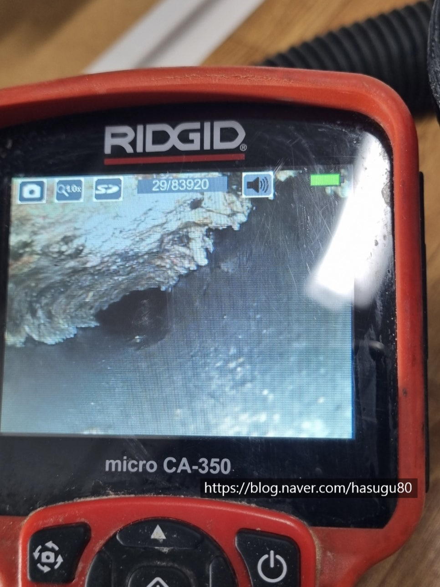
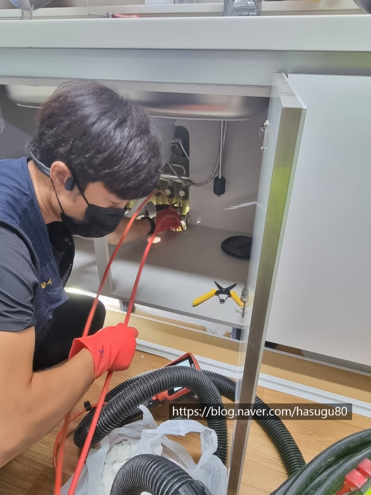
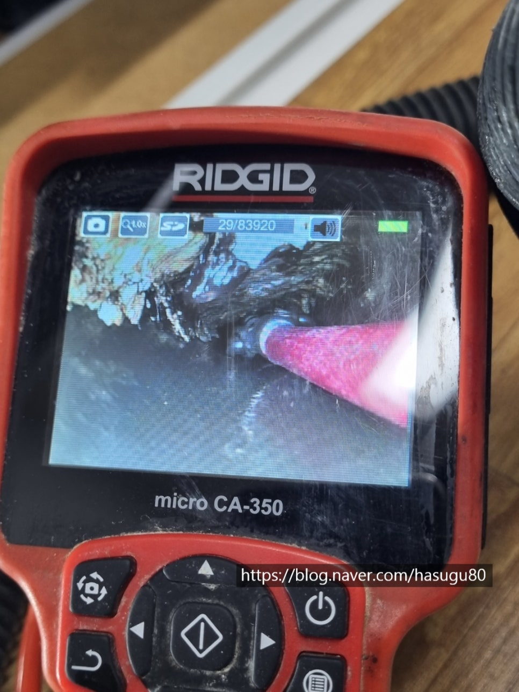
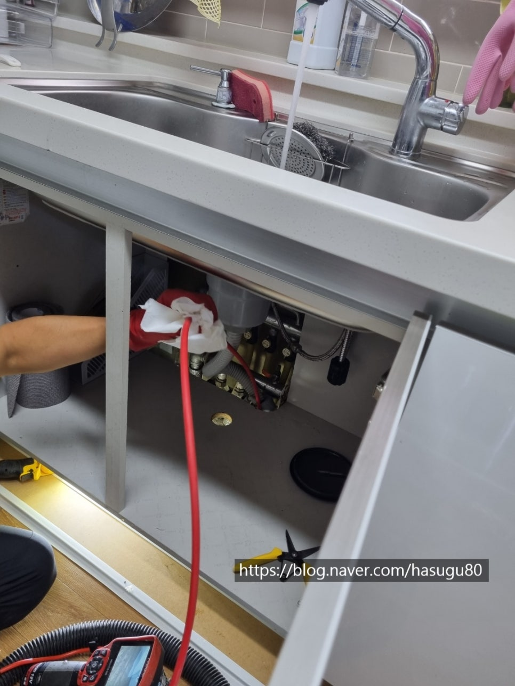
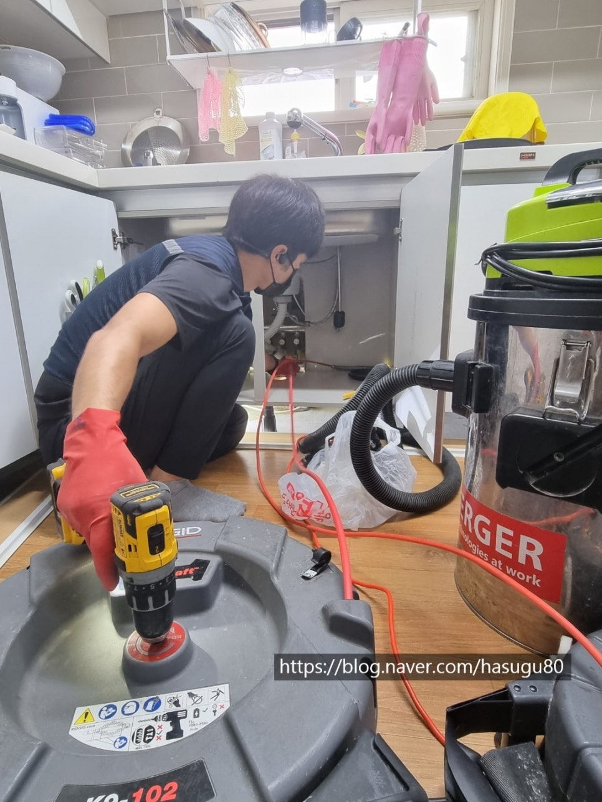
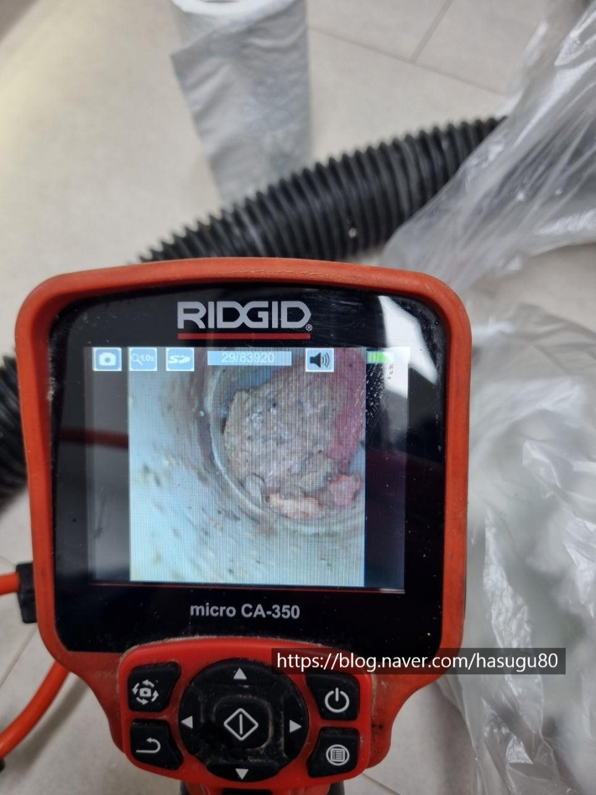
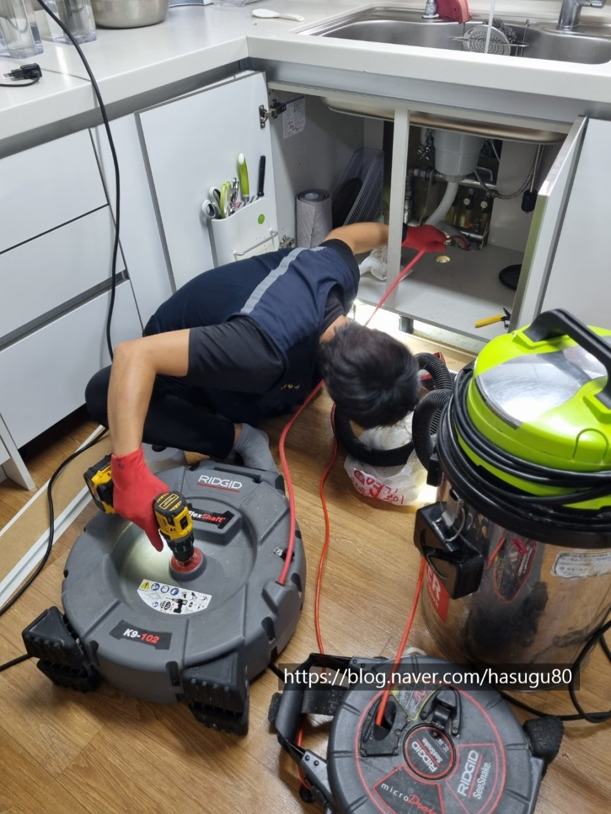

🏠 싱크대 하수구 막힘 싱크대 배관역류 뚫기
서울 싱크대막힘 전문 시공 후기

📋 작업 개요
- 위치: 서울
- 서비스 유형: 싱크대막힘, 변기막힘, 하수구막힘, 배관막힘, 역류해결, 뚫는업체, 고압세척
- 작업 일시: 2021. 8. 24. 23:17
- 업체명: 하수구수사대 (010-5615-2118)
🔍 문제 상황
안녕하세요 여러분!
무더운 여름이 지나고 시원한 가을이
왔습니다^^
요즘 연식이 오래된 아파트에서
싱크대 하수구 막힘 문의가 많은데요
대부분 관리를 하지않아 기름때가 딱딱하게
굳어서 고체화 되어 있는경우가 많습니다.
오늘 현장도 싱크대에서 물이 너무 천천히
빠지는 현상때문에 불러주셔서
하수구수사대가 출동하였습니다.
내시경검수
내시경을 투입하여보니 기름덩어리가
윗부분에 딱딱하게 붙어 있는걸 확인하였습니다.
배관구멍이 좁아져 물의 흐름을 방해하고
많은양의 물을 붓게되면 역류하거나
천천히 빠지는 현상이 나타납니다.
간혹 현장을 방문하게되면 펑크린,뚜러펑을
넣으셔서 더 악화되는 경우도 있습니다.
덩어리가 떨어지면서 그나마 조금씩
나가던 물도 기름덩어리가 막게 되면
물이 전혀나가지 않게 됩니다.
세척작업
아무래도 배관 윗부분에 붙어있는 기름덩어리를
제거 해야하므로 내시경과 효과적인

🔎 원인 분석
💡 전문가 진단: 하수구수사대010-2340-2118
장비를 투입해야합니다.
간혹 뚫은지 얼마되지 않았는데 또 막혔다고
하는 고객님들이 계시는데 이야기를
들어보면 대부분 내시경이 없는 설비업체를
불러서 작업한 경우가 대부분입니다.
배관에 관해서는 저희처럼 배관 전문업체를
알아보시길 추천드립니다.
예전 설비업체들은 대부분 종목이 다양하여
전문적인 장비가 없는것이 사실입니다.
하수구가 막히면 대부분 스프링하나만
들고와서 뚫고 물나가는것만 확인하는 경우가
많은데 싱크대처럼 음식물을 배출하는
배관은 필히 내시경장비가 필수라는
사실을 잊지 말아주세요^^
체인장비투입
배관에 붙은 기름덩어리를 갈아내기 위한
플랙스샤프트입니다. 앞에 체인이
회전을하면서 기름덩어리를 모두 갈아냅니다.
물론 배관에 전혀손상을 주지않습니다^^
싱크대 하수구 막힘 싱크대 배관역류 뚫기
대부분의 기름은 한번에 해결되지
않아 여러번의 반복작업이 이루집니다.
작업사진
배관에서 기름덩어리가 갈리게되면
죽처럼 갈리거나 돌처럼 딱딱한 형태 두가지로

🔧 작업 과정
나눠지는데 돌처럼 딱딱한경우는
시간이 좀 더 걸리는 경우가 많습니다.
간혹 장비가 과부하 걸리는경우도 있지만
그런경우에는 내시경을 보면서 기름덩어리를
살살 달래야합니다^^
딱딱한 기름덩어리는 되도록 밖으로 뽑아내는게
좋은데요 이유는 나가면서 막히는 경우도
생기게 됩니다.
"싱크대 하수구 막힘 싱크대 배관역류 뚫기"
배관에 걸린 기름덩어리
갈아낸 기름덩어리를 뽑아내려고
석션기로 흡입하였지만 입구부분에 걸려
있는 사진입니다.
덩어리가 배관에 끼어 나오지 못하고 있네요^^
이런 덩어리들이 배관에 걸려버리면
물의 흐름을 방해하고 몇덩어리만 쌓여도
물이 못나가게 되는겁니다.
마무리작업
큰덩어리들은 제거되었기 때문에
마무리작업으로 배관을 새것처럼 만드는 작업을
하고 있습니다.
내시경으로 볼때 배관에 기름덩어리가
있는것보단 새것처럼 깨끗한게 저도 보기좋기에
최대한 깔끔하게 진행합니다.
세척완료후/전
세척이 완료되었습니다!!
확실히 세척전 사진과 비교가 많이 되네요^^
오늘현장이 배관구배가 좋은편이지만
관리가 제대로 이루어지지 않은것으로 보여집니다.
대부분 물이 고여있어 기름이 배관에 붙는데
오늘현장이 관리를 안하다보니 오랜기간
배관에 기름이 조금씩 아주 조금씩 붙게 된것으로
판단되어집니다.
한달에 한번이라고 배관세정제를 넣어주시면
좋은데 아무래도 요즘 다들 살아가기
바쁜데 보이지 않는 배관관리를 하기란
쉽지않는게 현실입니다.
마지막으로 배수테스트를 진행합니다.
고객님게 관리요령을 전달드리고
깔끔하게 해결된 현장이였습니다^^


✅ 작업 완료
싱크대배관세척시 1년 무상as를 해드리고 있기때문에
고객님께서도 안심이 된다면
이제 설거지도 맘편하게 하겠다고 하시네요^^
저희 하수구수사대는
서울경기인천 전지역에서 활동을
싱크대막힘 뿐만아니라 변기막힘,욕실막힘,세탁실막힘
고압세척등등 모든하수구 작업이 가능합니다.
궁금한점은 언제든지 문의주세요^^
하수구수사대
010-2340-2118




⚠️ 주방 싱크대 배관 막힘 예방 수칙
- ✅ 기름기가 묻은 식기나 프라이팬은 설거지 전 키친타올로 반드시 기름때를 닦아내세요.
- ✅ 주기적으로 싱크대 개수대에 뜨거운 물을 가득 받아 한 번에 내려 배관 내부 기름을 씻어내세요.
- ✅ 배수구 거름망을 미세한 필터로 사용하시고 음식물 찌꺼기가 틈으로 새어 들지 않게 관리하세요.
- ✅ 베이킹소다와 식초를 뜨거운 물과 함께 일주일에 한 번씩 부어주면 배관 살균과 막힘 예방에 좋습니다.
💡 핵심 정리
- 확실한 장비 작업(내시경 점검 및 샤프트 스케일링)으로 원인을 뿌리 뽑습니다.
- 작업 후 1년 이내에 동일한 부위 재발 시 100% 무상 A/S 서비스를 보장합니다.
- 서울 · 경기 · 인천 전 지역에 24시간 언제든 긴급 출동할 수 있도록 항시 대기 중입니다.
❓ 자주 묻는 질문 (FAQ)
🚨 서울 싱크대막힘 문제로 고민이신가요?
정확한 원인 진단과 확실한 시공으로 재발 없는 해결을 약속드립니다.
24시간 긴급 출동 | 서울 · 경기 · 인천 전지역 | 1년 내 재발 시 무상 A/S